Champagne & objets de bar · Guide du collectionneur
Seaux à champagne vintage français : guide du collectionneur
Peu d’objets incarnent aussi directement l’art de la table à la française que le seau à champagne. Utilitaire par conception et souvent décoratif par intention, ces rafraîchissoirs ont accompagné les célébrations dans les restaurants, les bars et les maisons privées tout au long du XXᵉ siècle. Ce guide examine leur fabrication, la manière dont les maisons de champagne et les fabricants d’arts de la table français en ont façonné l’apparence, et comment un collectionneur peut aborder l’identification, la datation et l’état avec rigueur.
Du service du champagne à l’objet de design
Un seau à champagne n’a qu’une fonction : maintenir une bouteille au frais à table. Pourtant, la manière dont cette fonction a été traitée en France révèle bien davantage. La forme se situe au croisement de l’hospitalité, du design industriel et de l’image de marque — un petit objet auquel on demande de paraître juste sur une table bien dressée tout en résistant à un usage quotidien en salle.
Cette double vie explique l’intérêt des exemplaires vintage aujourd’hui. Certains ont été conçus comme des arts de la table raffinés ; d’autres ont été produits pour le compte de maisons de champagne et portent leurs noms et emblèmes. Entre ces deux pôles s’étend une grande variété de matériaux, de formes et de finitions, et c’est précisément ce qui rend cette catégorie intéressante à étudier plutôt qu’à simplement acheter.
Les maisons de champagne et leurs seaux marqués
Les seaux vintage les plus connus sont ceux associés aux maisons de champagne françaises. Ces rafraîchissoirs marqués étaient utilisés dans le cadre de la restauration et sont devenus des objets identifiables à part entière, portant noms de maisons, emblèmes et couleurs. Il convient d’être précis sur ce que ce marquage nous apprend : un nom de maison identifie la marque pour laquelle ou par laquelle l’objet a été utilisé, et non nécessairement l’atelier qui l’a fabriqué.
L’exemplaire Veuve Clicquot Ponsardin de la collection Cook & Collect illustre la façon dont la couleur et le matériau peuvent servir une marque. Son corps épais, orange et translucide — un matériau synthétique de type acrylique — est immédiatement associé à la maison, rehaussé par un large lettrage noir et la répétition de l’emblème historique de l’ancre. C’est un objet très sculptural, et un rappel utile que les objets de bar marqués ne se limitaient pas au métal.

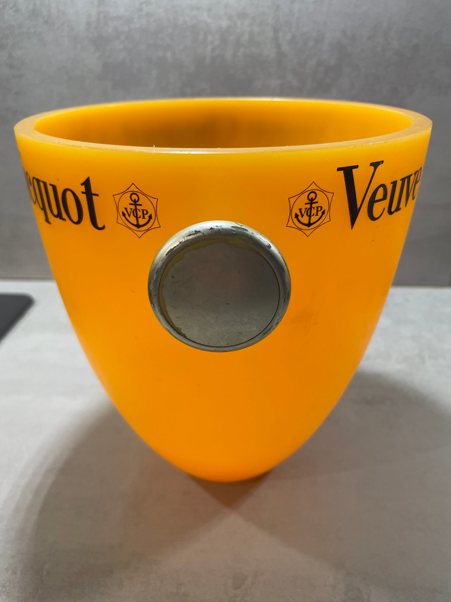
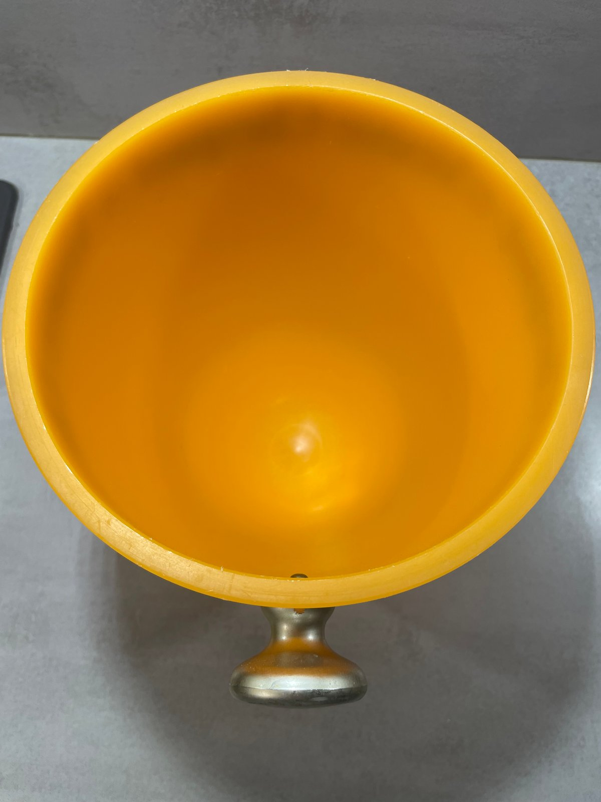
Ce que l’on peut dire de sa datation
La datation des objets de bar champenois vintage exige de la prudence. Des seaux Veuve Clicquot orange comparables sont diversement attribués sur le marché du vintage à des périodes allant des années 1950–1960 jusqu’à la fin du XXᵉ siècle, mais ces dates sont rarement étayées par des catalogues d’époque ou une documentation de fabricant. L’emblème de l’ancre V.C.P. identifie la maison historique Veuve Clicquot Ponsardin, mais n’établit pas à lui seul quand l’objet de service a été produit ni par qui il a été fabriqué. Aucune marque de fabricant ni référence documentaire n’ayant encore été identifiée pour ce modèle précis, Cook & Collect décrit prudemment cet exemplaire comme un objet de bar français Veuve Clicquot du XXᵉ siècle, plutôt que de lui attribuer une date précise non étayée.
Le seau en aluminium Moët & Chandon soulève une question voisine à propos des marquages. Sa base porte la mention « MADE IN FRANCE », et il présente la plaque noire de la maison ainsi qu’un sceau central rouge. Cette mention « Made in France » confirme le lieu de fabrication mais ne désigne pas, à elle seule, un fabricant. Nous n’attribuons donc cette pièce à aucun fabricant particulier, précisément parce que la base ne porte aucune marque de fabricant confirmée.
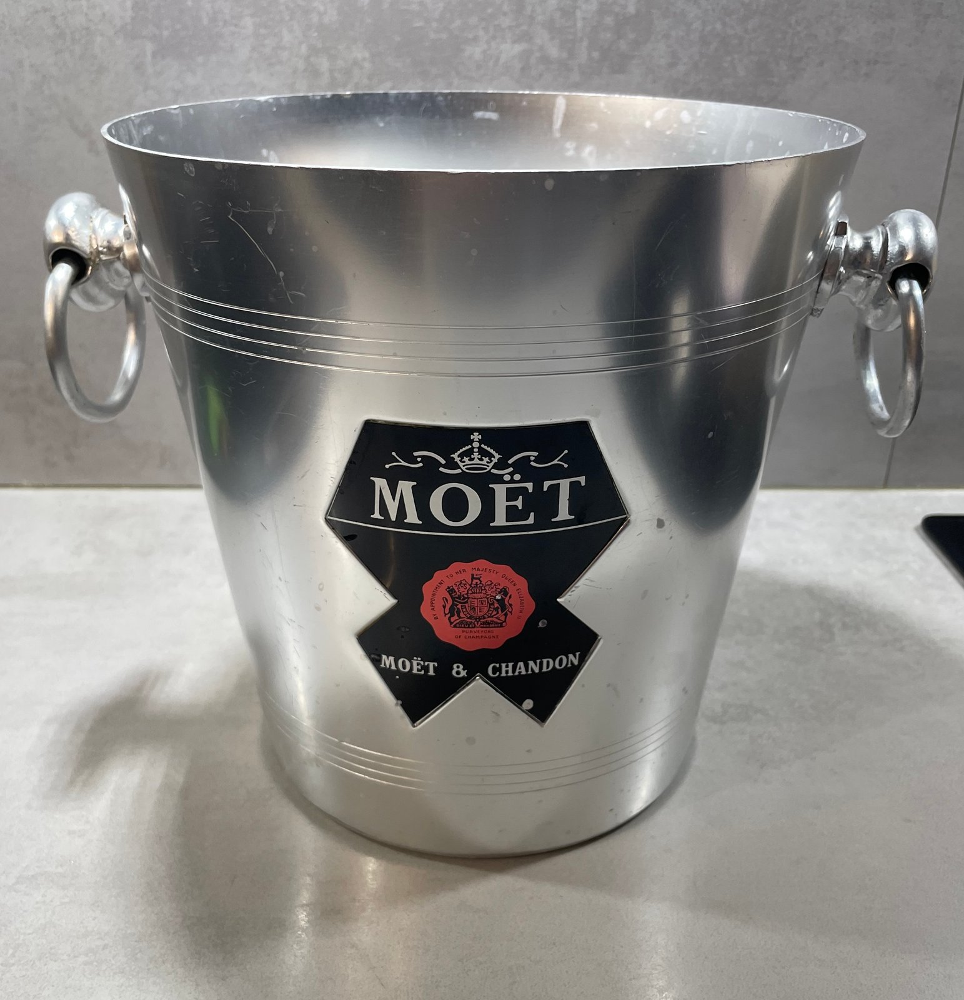
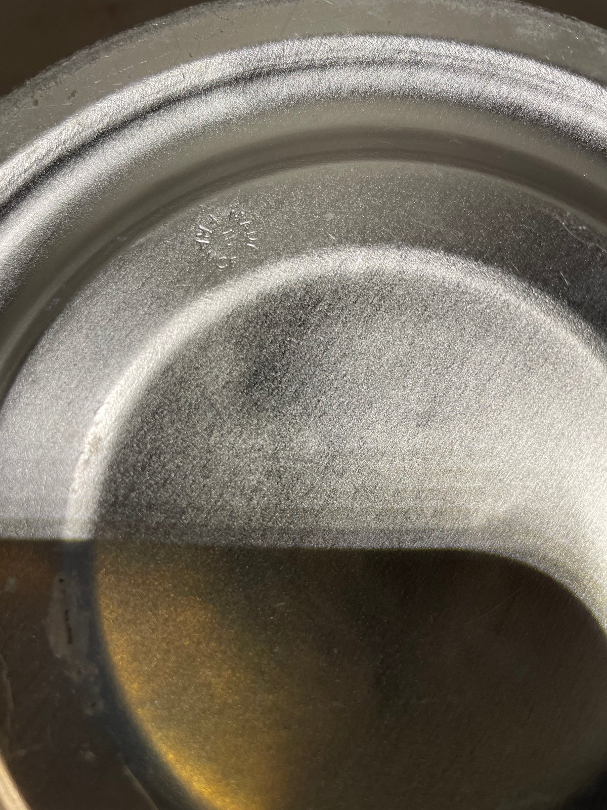
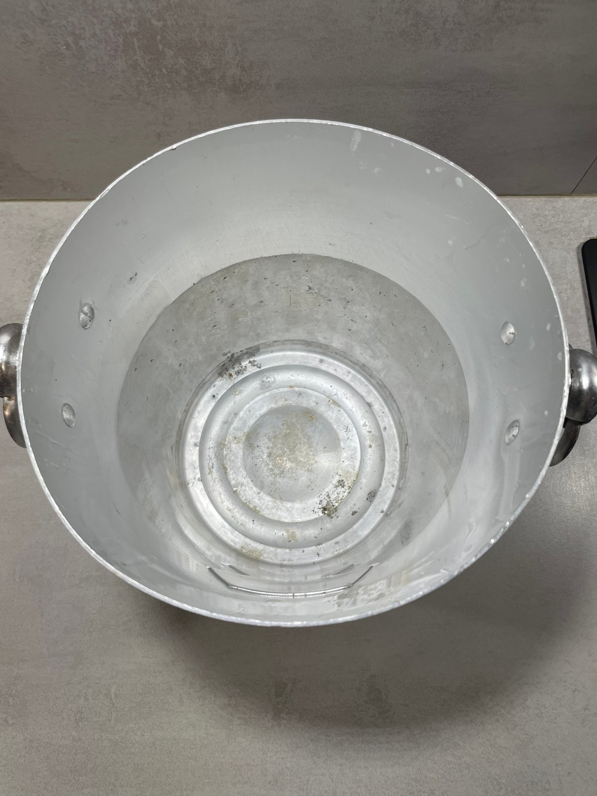
Ce que l’on peut dire de sa datation
Les seaux à champagne en aluminium de ce type sont fréquemment datés du milieu du XXᵉ siècle sur le marché du vintage, mais ces attributions sont rarement étayées par une documentation de fabricant. La base de cet exemplaire ne porte que la mention « MADE IN FRANCE », qui confirme l’origine française sans identifier de fabricant, et la plaque Moët & Chandon ainsi que le sceau central identifient la maison plutôt que l’atelier qui a produit l’objet. Resserrer la période supposera de comparer la plaque, le sceau et les bandes gravées à des exemplaires documentés et à la publicité d’époque. En attendant, Cook & Collect le décrit comme un seau à champagne français en aluminium du XXᵉ siècle.
Fabricants français et arts de la table
Le service du champagne en France ne s’est jamais limité aux seaux promotionnels produits pour les maisons de champagne. Des fabricants d’arts de la table et des maisons d’inspiration orfèvrerie ont également produit des rafraîchissoirs à vin et à champagne sophistiqués, destinés à la table plutôt qu’à une marque. Ces pièces s’identifient par une marque de fabricant plutôt que par un emblème de maison, et récompensent l’attention portée aux proportions, à la finition et aux détails.
Le rafraîchissoir Jean Couzon de la collection est un exemple documenté de cette tradition. Le dessous porte les mentions « Jean Couzon Orfèvre » et « INOX – 18/10 », indiquant un acier inoxydable 18/10 poli. Son bord supérieur évasé, sa base sur piédouche à décor de perles et de cannelures, ainsi que ses deux anses annulaires articulées relèvent d’un véritable design de service de table français plutôt que d’un objet promotionnel. Nous ne lui attribuons ni modèle précis ni décennie exacte, faute de documentation.
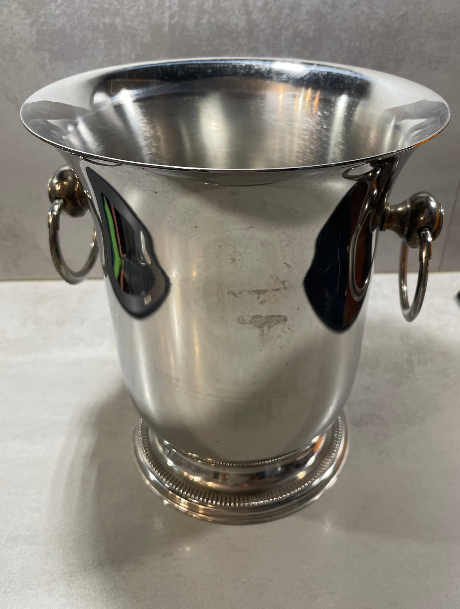
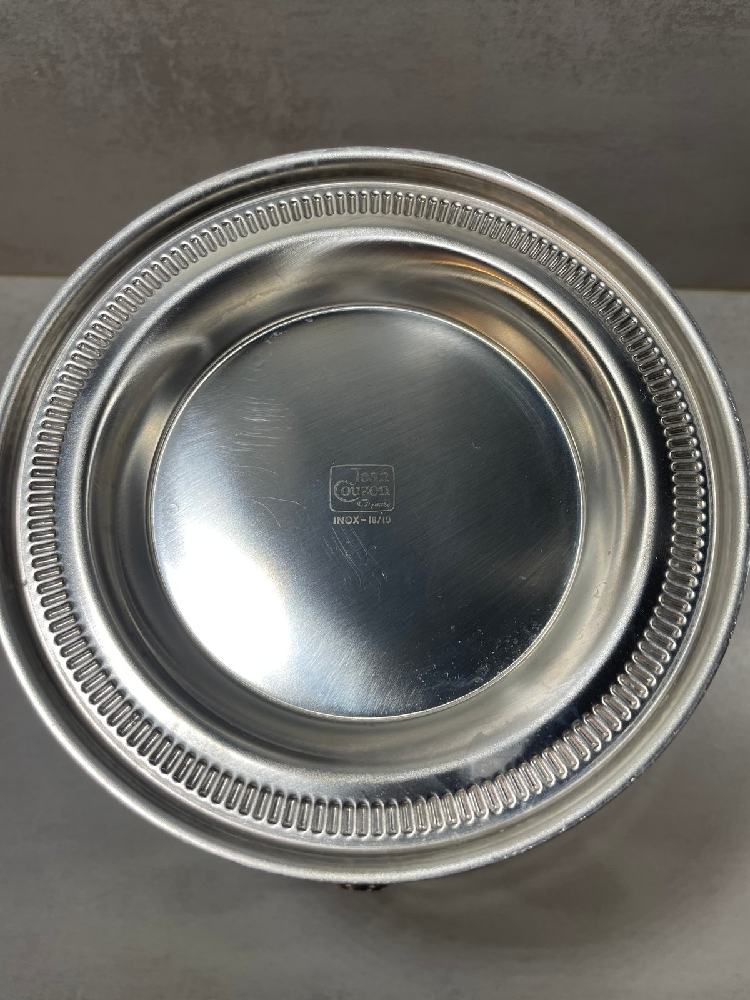
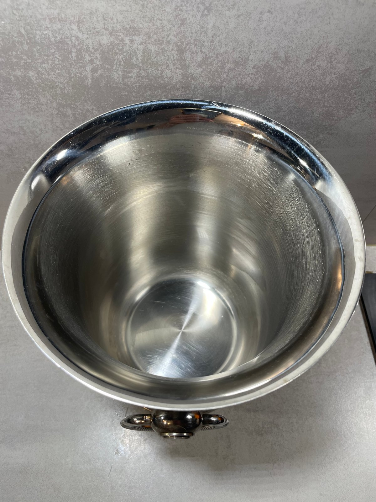
Ce que l’on peut dire de sa datation
Le dessous porte les mentions « Jean Couzon Orfèvre » et « INOX – 18/10 », qui identifient le fabricant et la nuance d’acier, mais non une date de production. Les services de table français en acier inoxydable de ce type sont souvent situés largement dans la seconde moitié du XXᵉ siècle, bien que ces fourchettes soient rarement étayées par des sources de catalogue. Nous n’avons pas encore rattaché ce rafraîchissoir à une référence de modèle documentée, et la base sur piédouche ainsi que le décor de perles sont les éléments actuellement comparés à des arts de la table Jean Couzon documentés. Pour l’instant, Cook & Collect le décrit simplement comme un objet de bar français en acier inoxydable du XXᵉ siècle.
Matériaux et construction
Le matériau est l’un des premiers éléments que lit un collectionneur. Les seaux à champagne vintage français se rencontrent en aluminium, en acier inoxydable, en acrylique et autres matériaux synthétiques, et — lorsque cela est historiquement pertinent — en métal argenté et autres métaux. Chacun évolue différemment dans le temps, ce qui influe à la fois sur l’apparence et sur la manière d’évaluer une pièce.
L’aluminium, comme sur l’exemplaire Moët & Chandon, est léger et se prête bien au décor gravé ou cannelé ; il tend à présenter une oxydation et des traces d’usage, particulièrement à l’intérieur. L’acier inoxydable, tel que le 18/10 employé par Jean Couzon, est plus résistant et conserve une surface polie, tout en portant de légères rayures d’usage. Les corps en acrylique et en matériaux synthétiques, comme le seau Veuve Clicquot, permettent des couleurs franches et un marquage affirmé, mais s’usent plus volontiers autour du bord et aux points de fixation des anses métalliques.
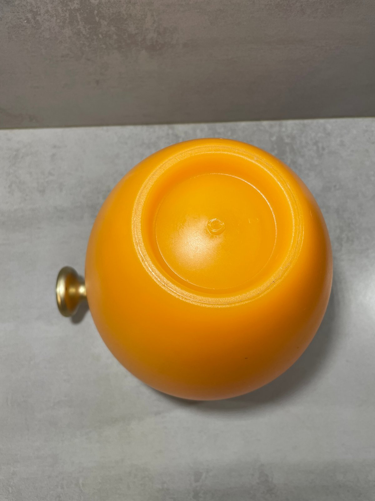
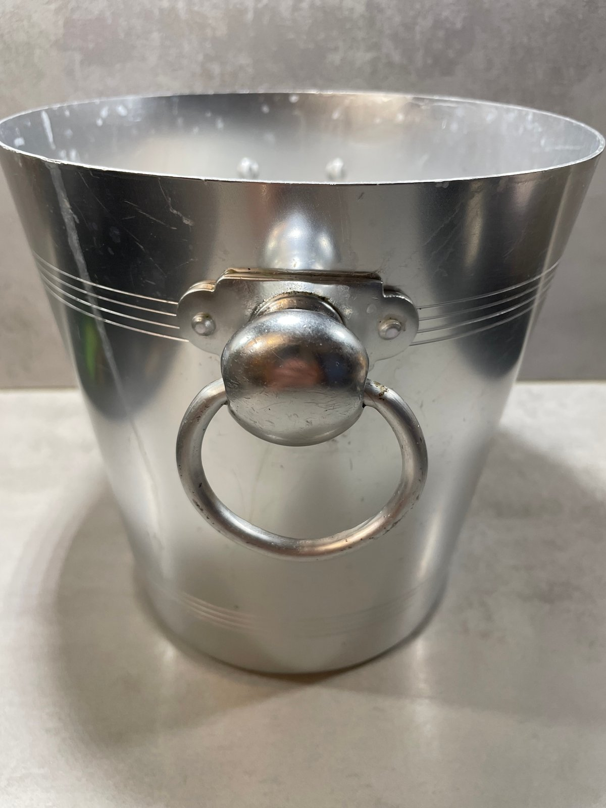
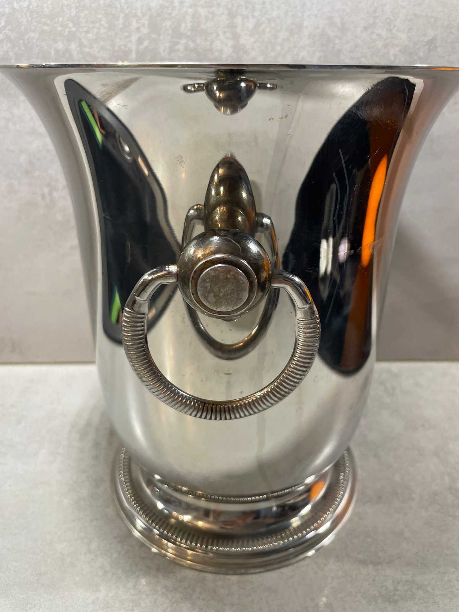
Les détails de construction méritent un examen attentif : la façon dont les anses sont fixées, si la base constitue un piédouche distinct ou est formée avec le corps, et la manière dont les éléments décoratifs comme les cannelures ou les perles sont exécutés. Ces détails sont souvent plus instructifs qu’une marque isolée.
Comment identifier un seau à champagne vintage français
L’identification s’aborde au mieux comme un faisceau d’indices plutôt que comme une réponse unique. Les éléments utiles comprennent les marques de fabricant, les logos de maisons, la typographie, les étiquettes ou plaques appliquées, la construction des anses, celle de la base, le matériau lui-même, les marques de fabrication et — lorsqu’ils sont disponibles — les catalogues et publicités d’époque.
Deux distinctions méritent d’être énoncées clairement. Premièrement, un logo de maison de champagne identifie le client ou la maison commanditaire ; il n’identifie pas en soi le fabricant. Deuxièmement, une mention « Made in France » confirme le pays d’origine mais ne désigne pas, à elle seule, le fabricant. Traiter ces informations séparément est ce qui garantit l’honnêteté d’une identification.
Datation des seaux à champagne vintage
La datation doit combiner plusieurs éléments de preuve plutôt que reposer sur un seul : marquages, méthodes de construction, évolution du logo d’une maison, typographie, matériaux, catalogues et publicités documentés, et comparaison avec des exemplaires datés de manière fiable. Un matériau ou un logo peut suggérer une période large, mais les règles simplistes sont faciles à mal appliquer.
Lorsque les éléments ne sont pas concluants, nous préférons des formulations prudentes — par exemple « XXᵉ siècle » ou « milieu du XXᵉ siècle » — ou nous indiquons que la datation fait encore l’objet de recherches. Pour une annonce sur une place de marché, cela peut sembler excessivement prudent ; pour un professionnel qui construit une collection réfléchie, c’est précisément l’essentiel.
État, patine et restauration
Ces objets ont servi. Rayures, oxydation et usure générale sont à prévoir sur des pièces qui ont passé leur vie utile dans des restaurants, des bars et des maisons, et ces traces relèvent de l’histoire de l’objet plutôt que du simple défaut. Le seau Moët & Chandon, par exemple, présente une usure visible et une oxydation intérieure cohérentes avec un usage réel, que nous décrivons ouvertement.
Nous mettons en garde contre un polissage agressif qui effacerait le caractère d’origine de la surface ou les marques. Un nettoyage respectueux est raisonnable ; ramener une pièce à un éclat artificiel ne l’est pas, et peut détruire les indices mêmes sur lesquels s’appuie un collectionneur.
Collectionner les objets de bar champenois français aujourd’hui
Les seaux à champagne français restent accessibles à collectionner et faciles à vivre. Ils s’accordent à un intérieur réfléchi, servent d’objets de présentation, et récompensent le collectionneur qui lit attentivement les matériaux et les marques plutôt que de se fier au seul nom. En tant que catégorie, ils s’inscrivent naturellement aux côtés des cuivres français et d’autres objets de la table.